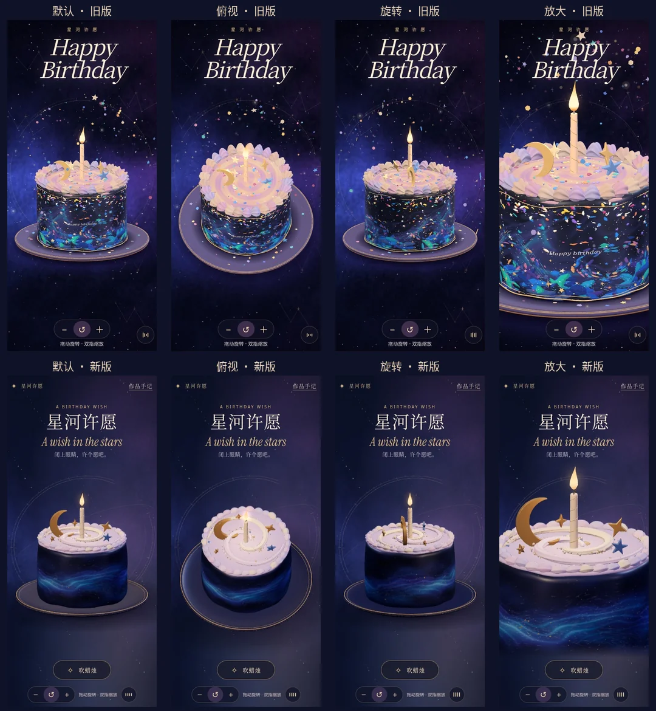

作品手记
夜釉星河
为远看设计一道星河，为近看制作奶油、釉面和糖艺。
怎么选定夜釉星河
糖艺作品给了釉面流向和偏心装饰的参考，天文图像给了密度和冷暖关系，沉浸式展示网站给了控制权交接的参考。三套 Blender 样片共用机位和影棚光。夜釉星河同时保留了暖烛、金月和能环绕侧面阅读的蓝紫笔触。
同机位看变化
从左到右是默认、俯视、旋转和放大，上排为旧版，下排为新版。截图来自移动尺寸的 Chromium WebGL 测试，使用相同的相机操作输入。

用户定方向
项目从手绘星空、梦幻氛围和生日仪式感出发。此前 iPhone 截图发现了顶面发白，成为灯光改造时需要复验的具体问题。
AI 辅助实现与验证
制作造型和釉面脚本，建立三套样片，导出 glTF，处理浏览器里的星轨、烛光和吹灭状态。首轮浏览器近景偏白，随后降低环境填充，调整主光高度及色调映射，再复拍。
真机复现
打开 诊断预览，点亮后静置，拖动一圈，再双指放大、吹灭和重新点亮。诊断栏会显示渲染路径、帧时间和 WebGL 绘制量。iPhone Safari 真机数据待验证。